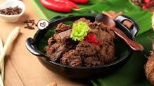
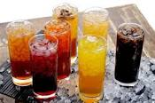

About
Berikut adalah penjelasan mengenai makanan, minuman, dan makanan cepat saji.
Food
Makanan adalah substansi yang dikonsumsi oleh organisme untuk memperoleh energi, nutrisi, dan mempertahankan kehidupan. Makanan dapat berasal dari sumber tumbuhan atau hewan, dan mengandung berbagai zat seperti karbohidrat, protein, lemak, vitamin, dan mineral. Makanan memberikan bahan bakar bagi tubuh, membantu dalam pertumbuhan dan perkembangan, memperbaiki jaringan, dan menjaga kesehatan secara keseluruhan.

Drink
Minuman adalah zat cair yang dikonsumsi oleh manusia untuk memenuhi kebutuhan hidrasi tubuh atau memberikan rasa dan kenikmatan. Minuman dapat berupa air, jus, teh, kopi, minuman ringan, susu, dan minuman beralkohol. Setiap jenis minuman memiliki karakteristik, manfaat, dan dampak kesehatan yang berbeda. Penting untuk memilih minuman yang sesuai dengan kebutuhan tubuh dan mengonsumsinya secara seimbang untuk menjaga kesehatan dan kesejahteraan.

Junk Food
Junk food adalah makanan yang memiliki nilai gizi rendah dan tinggi kalori. Makanan ini sering kali diproses secara intensif, mengandung banyak gula, lemak jenuh, dan bahan tambahan. Contoh junk food meliputi keripik, makanan cepat saji, permen, minuman bersoda, dan makanan ringan komersial. Konsumsi berlebihan junk food dapat berdampak buruk pada kesehatan. Jenis makanan ini umumnya diproses secara intensif dan mengandung banyak gula tambahan, lemak jenuh, garam, dan bahan tambahan lainnya. Junk food seringkali tidak menyediakan nutrisi esensial yang dibutuhkan oleh tubuh untuk fungsi yang optimal.